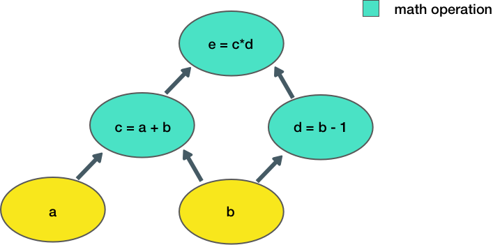
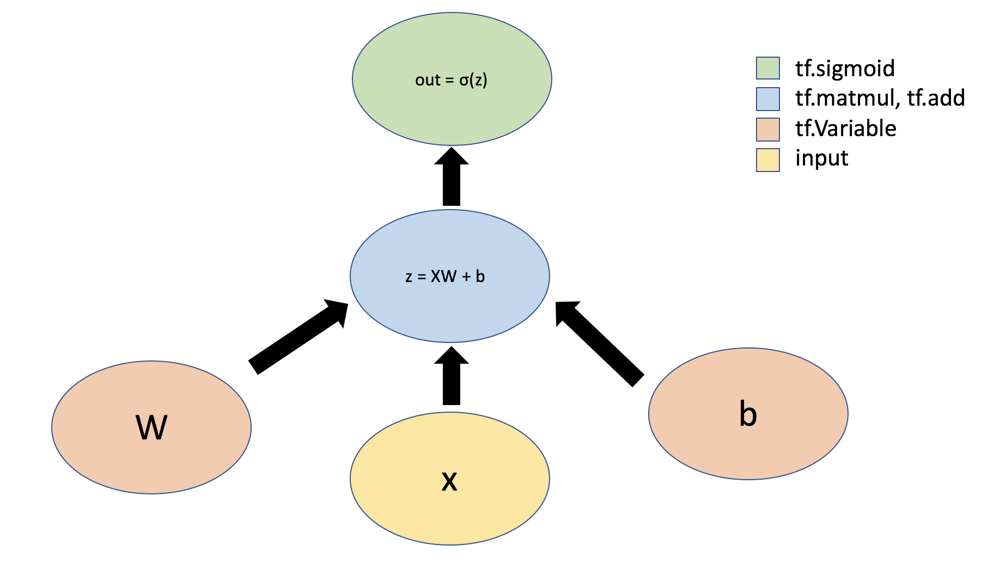
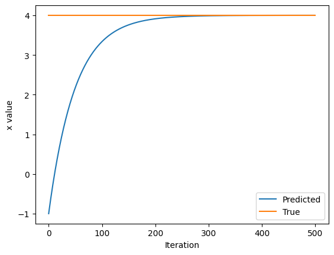

2023년 MIT에서 강의된 6.S191 강좌의 Lab의이해를 돕기위해 작성되었습니다. Lab에 대해서는 이곳에서 확인가능하며,
해당 강좌는 여기서 확인가능합니다.
- Lab1-Part1 Intro to Tensorflow
- Lab1-Part2 Music Generation
- Lab2-Part1 MNIST
- Lab2-Part2 Face Detection
- Lab3-Part1 Introduction Caspa
- Lab3-Part2 Bias and Uncertainty
0.1 Load Required Library
%tensorflow_version 2.x
import tensorflow as tf
# Download and import the MIT Introduction to Deep Learning package
!pip install mitdeeplearning
import mitdeeplearning as mdl
import numpy as np
import matplotlib.pyplot as plt1.1 왜 TensorFlow는 TensorFlow인가요?
TensorFlow는 다차원 배열로 생각할 수 있는 데이터 구조인 텐서의 흐름(노드/수학적 연산)을 처리하기 때문에 ’TensorFlow’라고 불립니다.
텐서는 문자열이나 정수와 같은 기본 데이터 타입의 n차원 배열로 표현되며, 벡터와 행렬을 더 높은 차원으로 일반화할 수 있는 방법을 제공합니다.
텐서의 형태는 차원 수 (ndim)와 각 차원의 크기(rank)를 정의합니다. 먼저 Scalar를 예로 0-d 텐서를 살펴보겠습니다:
sport = tf.constant("Tennis", tf.string)
number = tf.constant(1.41421356237, tf.float64)
print(f"`sport` is a {tf.rank(sport).numpy()}-d Tensor")
print(f"`number` is a {tf.rank(number).numpy()}-d Tensor")`sport` is a 0-d Tensor
`number` is a 0-d Tensor벡터와 리스트는 1-d 텐서입니다.
sports = tf.constant(["Tennis", "Basketball"], tf.string)
numbers = tf.constant([3.141592, 1.414213, 2.71821], tf.float64)
print(f"`sports` is a {tf.rank(sports).numpy()}-d Tensor")
print(f"`numbers` is a {tf.rank(numbers).numpy()}-d Tensor")`sports` is a 1-d Tensor
`numbers` is a 1-d Tensor다음으로 2차원 텐서 (행렬) 및 고차원 텐서를 생성해 봅시다.
예를 들어, 향후 이미지 처리 및 컴퓨터 비전과 관련된 실습에서는 4-d 텐서를 사용하게 될 것입니다.
여기서 차원은 배치에 포함된 예제 이미지의 수, 이미지 높이, 이미지 너비, 컬러 채널 수에 해당합니다.
matrix = tf.constant([[1,4],[3,2]],tf.float64)
images = tf.zeros([10,256,256,3],tf.float64) # 10 images with RGB color, 256 x 256 pixels
print(tf.rank(images).numpy().tolist())
print(tf.shape(images).numpy().tolist())4
[10, 256, 256, 3]보시다시피 shape는 각 텐서 차원에 있는 요소의 수를 제공합니다.
이 함수는 매우 유용하며 자주 사용하게 될 것입니다.
Tensor의 계산
TensorFlow에서 계산을 생각하고 시각화하는 편리한 방법은 그래프로 표현하는 것입니다.
그래프는 데이터를 저장하는 텐서와 이러한 텐서에 일정한 순서로 작용하는 수학적 연산으로 정의할 수 있습니다.
간단한 예시를 통해 TensorFlow를 사용하여 이 계산을 정의해 보겠습니다:
# Node A와 B를 정의하고 값을 초기화 합니다.
a = tf.constant(15)
b = tf.constant(61)
# A와 B를 더합니다
c1 = tf.add(a,b)
c2 = a + b # TensorFLow는 `+`를 오버라이드 하여 `c1`과 같이 동작하게 합니다.
print(c1)
print(c2)tf.Tensor(76, shape=(), dtype=int32)
tf.Tensor(76, shape=(), dtype=int32)텐서플로 연산으로 구성된 계산 그래프를 생성하고 연산을 실행하여 결과를 반환한 결과 값이 76인 텐서를 생성한 것을 보았습니다.
이제 조금 더 복잡한 예를 살펴보겠습니다:

여기서는 두 개의 입력 a, b를 받아 출력 e를 계산합니다.
그래프의 각 노드는 일부 입력을 받아 일부 연산을 수행한 후 그 출력을 다른 노드로 전달하는 연산을 나타냅니다.
이 계산 함수를 구성하는 간단한 함수를 텐서플로에서 정의해 보겠습니다:
### Defining Tensor computations ###
# Construct a simple computation function
def func(a,b):
c = tf.add(a,b)
d = tf.subtract(b,1)
e = tf.multiply(c,d)
return e
# Consider example values for a,b
a, b = 1.5, 2.5
# Execute the computation
e_out = func(a,b)
print(e_out)tf.Tensor(6.0, shape=(), dtype=float32)1.3 TensorFlow에서의 Neural Network
드디어 뉴럴 네트워크를 구현할 차례입니다!
TensorFlow에서는 Keras라는 딥러닝 모델을 위한 직관적인 High level API를 제공합니다. 먼저 하나의 Dense Layer를 가진 single perceptron($ y=σ(Wx+b)$)을 구현해보도록 해보겠습니다. 여기서 W는 행렬의 weights, b는 bias, x는 input, σ는 activation 함수, y는 output을 의미합니다.

### Defining a network Layer ###
# n_output_nodes: number of output nodes
# input_shape: shape of the input
# x: input to the layer
class OurDenseLayer(tf.keras.layers.Layer):
def __init__(self, n_output_nodes):
super(OurDenseLayer, self).__init__()
self.n_output_nodes = n_output_nodes
def build(self, input_shape):
d = int(input_shape[-1])
# Define and initialize parameters: a weight matrix W and bias b
# Note that parameter initialization is random!
self.W = self.add_weight("weight", shape=[d, self.n_output_nodes]) # note the dimensionality
self.b = self.add_weight("bias", shape=[1, self.n_output_nodes]) # note the dimensionality
def call(self, x):
z = tf.add(tf.matmul(self.X,self.W),self.b)
y = tf.sigmoid(z)
return y
# Since layer parameters are initialized randomly, we will set a random seed for reproducibility
tf.random.set_seed(1)
layer = OurDenseLayer(3)
layer.build((1,2))
x_input = tf.constant([[1,2.]], shape=(1,2))
y = layer.call(x_input)
# test the output!
print(y.numpy())[[0.45985997 0.646087 0.245385 ]]편리하게도 텐서플로에는 신경망에서 일반적으로 사용되는 여러 레이어가 정의되어 있습니다.
이제 단일 레이어를 사용하여 간단한 신경망을 정의하는 대신 Keras의 Sequential 모델과 단일 Dense 레이어를 사용하여 네트워크를 정의하겠습니다.
Sequential API를 사용하면 빌딩 블록처럼 레이어를 쌓아서 신경망을 쉽게 만들 수 있습니다.
### Defining a neural network using the Sequential API ###
# Import relevant packages
from tensorflow.keras import Sequential
from tensorflow.keras.layers import Dense
n_output_nodes = 3
model = Sequential()
dense_layer = Dense(n_output_nodes, activation='sigmoid')
model.add(dense_layer)
x_input = tf.constant([[1,2.]], shape=(1,2))
print(model(x_input).numpy())tf.Tensor([[0.6124562 0.91317874 0.8520293 ]], shape=(1, 3), dtype=float32)Sequential모델을 정의하는 대신에 Model class의 sub-class를 만들어 활용할 수 있습니다.
이를 통하여 커스텀 레이어, 커스텀 트레이닝, 커스텀 activation을 유연하게 정의할 수 있습니다.
### Defining a model using subclassing ###
from tensorflow.keras import Model
from tensorflow.keras.layers import Dense
class SubclassModel(tf.keras.Model):
# In __init__, we define the Model's layers
def __init__(self, n_output_nodes):
super(SubclassModel, self).__init__()
'''TODO: Our model consists of a single Dense layer. Define this layer.'''
self.dense_layer = Dense(n_output_nodes, activation='sigmoid')
# In the call function, we define the Model's forward pass.
def call(self, inputs):
return self.dense_layer(inputs)n_output_nodes = 3
model = SubclassModel(n_output_nodes)
x_input = tf.constant([[1,2.]], shape=(1,2))
print(model.call(x_input))tf.Tensor([[0.09956823 0.34443256 0.8754808 ]], shape=(1, 3), dtype=float32)1.4 TensorFlow의 자동 미분
자동 미분은 TensorFlow에서 가장 중요한 부분 중 하나이며 역전파를 이용한 훈련의 근간입니다.
미분을 계산하기 위해 tf.GradientTape를 사용하겠습니다.
네트워크를 통해 Forward Pass가 이루어지면 모든 연산이 “테이프”에 기록되고, 미분을 계산하기 위해 테이프가 역방향으로 재생됩니다.
기본적으로 테이프는 역방향으로 재생된 후 폐기되므로 특정 tf.GradientTape는 하나의 미분만 계산할 수 있으며 이후 호출은 런타임 오류를 발생시킵니다.
하지만 persistent gradient tape를 생성하면 동일한 계산을 통해 여러 미분을 계산할 수 있습니다.
먼저 GradientTape를 사용해 미분을 계산하고 계산을 위해 액세스하는 방법을 살펴보겠습니다. 간단한 함수 \(y=x^2\)를 정의하고 미분을 계산합니다:
### Gradient computation with GradientTape ###
# y = x^2
# Example: x = 3.0
x = tf.Variable(3.0)
# Initiate the gradient tape
with tf.GradientTape() as tape:
# Define the function
y = x * x
# Access the gradient -- derivative of y with respect to x
dy_dx = tape.gradient(y, x)
print(dy_dx)tf.Tensor(6.0, shape=(), dtype=float32)뉴럴 네트워크를 훈련할 때에는 loss 함수를 최소화 하기위해 SGD를 활용하여 미분합니다.
다음 예시에서는 Loss 함수를 SGD를 활용하여 최소화해보도록 하겠습니다.
\(L = (x- x_f)^2\)
### Function minimization with automatic differentiation and SGD ###
# Initialize a random value for our initial x
x = tf.Variable([tf.random.normal([1])])
print("Initializing x={}".format(x.numpy()))
learning_rate = 1e-2 # learning rate for SGD
history = []
# Define the target value
x_f = 4
# We will run SGD for a number of iterations. At each iteration, we compute the loss,
# compute the derivative of the loss with respect to x, and perform the SGD update.
for i in range(500):
with tf.GradientTape() as tape:
loss = (x-x_f)**2
# loss minimization using gradient tape
grad = tape.gradient(loss, x) # compute the derivative of the loss with respect to x
new_x = x - learning_rate*grad # sgd update
x.assign(new_x) # update the value of x
history.append(x.numpy()[0])
# Plot the evolution of x as we optimize towards x_f!
plt.plot(history)
plt.plot([0, 500],[x_f,x_f])
plt.legend(('Predicted', 'True'))
plt.xlabel('Iteration')
plt.ylabel('x value')